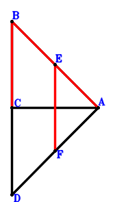
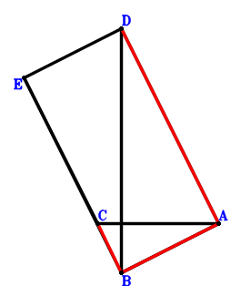
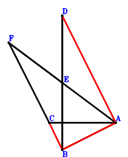
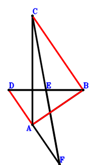
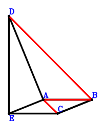
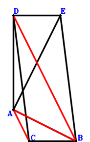
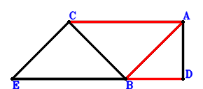
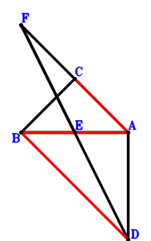
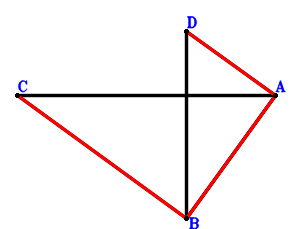

Exercise 575： Let E, F be the midpoints of BA, DA, respectively. CA⊥BD and BA⊥AD. Given that BC//EF, prove that \(BA^{2}=2 BC \cdot EF\).

\(\because \) E is the midpoint of BA \(\therefore \small\overrightarrow{AE}=\dfrac{\small\overrightarrow{AB}}{2}\).\(\because \) F is the midpoint of DA \(\therefore \small\overrightarrow{AF}=\dfrac{\small\overrightarrow{AD}}{2}\).\(\because \) BA⊥AD \(\therefore \small\overrightarrow{AB} \cdot \small\overrightarrow{AD}=0\) . . . . . . \(①\)\(\because \) CA⊥BD \(\therefore \small\overrightarrow{CA} \cdot \small\overrightarrow{DB}=- \small\overrightarrow{AC} \cdot \left(\small\overrightarrow{AB} - \small\overrightarrow{AD}\right)=- \small\overrightarrow{AB} \cdot \small\overrightarrow{AC} + \small\overrightarrow{AC} \cdot \small\overrightarrow{AD}=0\) . . . . . . \(②\)In conclusion, \(\small\overrightarrow{BA}^{2} + 2 \small\overrightarrow{CB} \cdot \small\overrightarrow{EF}=\small\overrightarrow{AB}^{2} + 2 \left(\small\overrightarrow{AB} - \small\overrightarrow{AC}\right) \cdot \left(- \small\overrightarrow{AE} + \small\overrightarrow{AF}\right)=\small\overrightarrow{AB}^{2} + 2 \left(- \dfrac{\small\overrightarrow{AB}}{2} + \dfrac{\small\overrightarrow{AD}}{2}\right) \cdot \left(\small\overrightarrow{AB} - \small\overrightarrow{AC}\right)=\small\overrightarrow{AB} \cdot \small\overrightarrow{AC} + \small\overrightarrow{AB} \cdot \small\overrightarrow{AD} - \small\overrightarrow{AC} \cdot \small\overrightarrow{AD}=①-②=0\)\(\because\) BC//EF \(\therefore\) \(BA^{2}=2 BC \cdot EF\).
Exercise 740： Let DEBA be a parallelogram. CA⊥DB and BA⊥EC. Given that DA//CB, prove that \(BA^{2}=CB \cdot DA\).

\(\because \) DEBA is a parallelogram \(\therefore \small\overrightarrow{AE}=\small\overrightarrow{AB} + \small\overrightarrow{AD}\).\(\because \) CA⊥DB \(\therefore \small\overrightarrow{CA} \cdot \small\overrightarrow{DB}=- \small\overrightarrow{AC} \cdot \left(\small\overrightarrow{AB} - \small\overrightarrow{AD}\right)=- \small\overrightarrow{AB} \cdot \small\overrightarrow{AC} + \small\overrightarrow{AC} \cdot \small\overrightarrow{AD}=0\) . . . . . . \(①\)\(\because \) BA⊥EC \(\therefore \small\overrightarrow{AB} \cdot \small\overrightarrow{EC}=\small\overrightarrow{AB} \cdot \left(\small\overrightarrow{AC} - \small\overrightarrow{AE}\right)=\small\overrightarrow{AB} \cdot \left(- \small\overrightarrow{AB} + \small\overrightarrow{AC} - \small\overrightarrow{AD}\right)=- \small\overrightarrow{AB}^{2} + \small\overrightarrow{AB} \cdot \small\overrightarrow{AC} - \small\overrightarrow{AB} \cdot \small\overrightarrow{AD}=0\) . . . . . . \(②\)In conclusion, \(\small\overrightarrow{BA}^{2} - \small\overrightarrow{CB} \cdot \small\overrightarrow{DA}=\small\overrightarrow{AB}^{2} + \small\overrightarrow{AD} \cdot \left(\small\overrightarrow{AB} - \small\overrightarrow{AC}\right)=\small\overrightarrow{AB}^{2} + \small\overrightarrow{AB} \cdot \small\overrightarrow{AD} - \small\overrightarrow{AC} \cdot \small\overrightarrow{AD}=-①-②=0\)\(\because\) DA//CB \(\therefore\) \(BA^{2}=CB \cdot DA\).
Exercise 742： Let E be the midpoint of DB and FA. BA⊥FC and CA⊥DB. Given that DA//CB, prove that \(BA^{2}=CB \cdot DA\).

\(\because \) E is the midpoint of DB \(\therefore \small\overrightarrow{AE}=\dfrac{\small\overrightarrow{AB}}{2} + \dfrac{\small\overrightarrow{AD}}{2}\).\(\because \) E is the midpoint of FA \(\therefore \small\overrightarrow{AF}=2 \small\overrightarrow{AE}=\small\overrightarrow{AB} + \small\overrightarrow{AD}\).\(\because \) CA⊥DB \(\therefore \small\overrightarrow{CA} \cdot \small\overrightarrow{DB}=- \small\overrightarrow{AC} \cdot \left(\small\overrightarrow{AB} - \small\overrightarrow{AD}\right)=- \small\overrightarrow{AB} \cdot \small\overrightarrow{AC} + \small\overrightarrow{AC} \cdot \small\overrightarrow{AD}=0\) . . . . . . \(①\)\(\because \) BA⊥FC \(\therefore \small\overrightarrow{AB} \cdot \small\overrightarrow{FC}=\small\overrightarrow{AB} \cdot \left(\small\overrightarrow{AC} - \small\overrightarrow{AF}\right)=\small\overrightarrow{AB} \cdot \left(- \small\overrightarrow{AB} + \small\overrightarrow{AC} - \small\overrightarrow{AD}\right)=- \small\overrightarrow{AB}^{2} + \small\overrightarrow{AB} \cdot \small\overrightarrow{AC} - \small\overrightarrow{AB} \cdot \small\overrightarrow{AD}=0\) . . . . . . \(②\)In conclusion, \(\small\overrightarrow{BA}^{2} - \small\overrightarrow{CB} \cdot \small\overrightarrow{DA}=\small\overrightarrow{AB}^{2} + \small\overrightarrow{AD} \cdot \left(\small\overrightarrow{AB} - \small\overrightarrow{AC}\right)=\small\overrightarrow{AB}^{2} + \small\overrightarrow{AB} \cdot \small\overrightarrow{AD} - \small\overrightarrow{AC} \cdot \small\overrightarrow{AD}=-①-②=0\)\(\because\) DA//CB \(\therefore\) \(BA^{2}=CB \cdot DA\).
Exercise 747： Let E be the midpoint of CF and DB. CA⊥DB and FA⊥AB. Given that DA//CB, prove that \(AB^{2}=CB \cdot DA\).

\(\because \) E is the midpoint of DB \(\therefore \small\overrightarrow{BE}=\dfrac{\small\overrightarrow{BD}}{2}\).\(\because \) E is the midpoint of CF \(\therefore \small\overrightarrow{BF}=- \small\overrightarrow{BC} + 2 \small\overrightarrow{BE}=- \small\overrightarrow{BC} + \small\overrightarrow{BD}\).\(\because \) FA⊥AB \(\therefore \small\overrightarrow{AB} \cdot \small\overrightarrow{FA}=- \small\overrightarrow{BA} \cdot \left(\small\overrightarrow{BA} - \small\overrightarrow{BF}\right)=- \small\overrightarrow{BA} \cdot \left(\small\overrightarrow{BA} + \small\overrightarrow{BC} - \small\overrightarrow{BD}\right)=- \small\overrightarrow{BA}^{2} - \small\overrightarrow{BA} \cdot \small\overrightarrow{BC} + \small\overrightarrow{BA} \cdot \small\overrightarrow{BD}=0\) . . . . . . \(①\)\(\because \) CA⊥DB \(\therefore \small\overrightarrow{CA} \cdot \small\overrightarrow{DB}=- \small\overrightarrow{BD} \cdot \left(\small\overrightarrow{BA} - \small\overrightarrow{BC}\right)=- \small\overrightarrow{BA} \cdot \small\overrightarrow{BD} + \small\overrightarrow{BC} \cdot \small\overrightarrow{BD}=0\) . . . . . . \(②\)In conclusion, \(\small\overrightarrow{BA}^{2} - \small\overrightarrow{CB} \cdot \small\overrightarrow{DA}=\small\overrightarrow{BA}^{2} + \small\overrightarrow{BC} \cdot \left(\small\overrightarrow{BA} - \small\overrightarrow{BD}\right)=\small\overrightarrow{BA}^{2} + \small\overrightarrow{BA} \cdot \small\overrightarrow{BC} - \small\overrightarrow{BC} \cdot \small\overrightarrow{BD}=-①-②=0\)\(\because\) DA//CB \(\therefore\) \(AB^{2}=CB \cdot DA\).
Exercise 785： Let AECB be a parallelogram. DE⊥AB and DA⊥CB. Given that AC//DB, prove that \(AB^{2}=AC \cdot DB\).

\(\because \) AECB is a parallelogram \(\therefore \small\overrightarrow{BE}=\small\overrightarrow{BA} + \small\overrightarrow{BC}\).\(\because \) DE⊥AB \(\therefore \small\overrightarrow{AB} \cdot \small\overrightarrow{DE}=- \small\overrightarrow{BA} \cdot \left(- \small\overrightarrow{BD} + \small\overrightarrow{BE}\right)=- \small\overrightarrow{BA} \cdot \left(\small\overrightarrow{BA} + \small\overrightarrow{BC} - \small\overrightarrow{BD}\right)=- \small\overrightarrow{BA}^{2} - \small\overrightarrow{BA} \cdot \small\overrightarrow{BC} + \small\overrightarrow{BA} \cdot \small\overrightarrow{BD}=0\) . . . . . . \(①\)\(\because \) DA⊥CB \(\therefore \small\overrightarrow{CB} \cdot \small\overrightarrow{DA}=- \small\overrightarrow{BC} \cdot \left(\small\overrightarrow{BA} - \small\overrightarrow{BD}\right)=- \small\overrightarrow{BA} \cdot \small\overrightarrow{BC} + \small\overrightarrow{BC} \cdot \small\overrightarrow{BD}=0\) . . . . . . \(②\)In conclusion, \(\small\overrightarrow{BA}^{2} + \small\overrightarrow{CA} \cdot \small\overrightarrow{DB}=\small\overrightarrow{BA}^{2} - \small\overrightarrow{BD} \cdot \left(\small\overrightarrow{BA} - \small\overrightarrow{BC}\right)=\small\overrightarrow{BA}^{2} - \small\overrightarrow{BA} \cdot \small\overrightarrow{BD} + \small\overrightarrow{BC} \cdot \small\overrightarrow{BD}=-①+②=0\)\(\because\) AC//DB \(\therefore\) \(AB^{2}=AC \cdot DB\).
Exercise 789： Let DCBE be a parallelogram. DA⊥CB and EA⊥AB. Given that AC//DB, prove that \(AB^{2}=AC \cdot DB\).

\(\because \) DCBE is a parallelogram \(\therefore \small\overrightarrow{BE}=- \small\overrightarrow{BC} + \small\overrightarrow{BD}\).\(\because \) EA⊥AB \(\therefore \small\overrightarrow{AB} \cdot \small\overrightarrow{EA}=- \small\overrightarrow{BA} \cdot \left(\small\overrightarrow{BA} - \small\overrightarrow{BE}\right)=- \small\overrightarrow{BA} \cdot \left(\small\overrightarrow{BA} + \small\overrightarrow{BC} - \small\overrightarrow{BD}\right)=- \small\overrightarrow{BA}^{2} - \small\overrightarrow{BA} \cdot \small\overrightarrow{BC} + \small\overrightarrow{BA} \cdot \small\overrightarrow{BD}=0\) . . . . . . \(①\)\(\because \) DA⊥CB \(\therefore \small\overrightarrow{CB} \cdot \small\overrightarrow{DA}=- \small\overrightarrow{BC} \cdot \left(\small\overrightarrow{BA} - \small\overrightarrow{BD}\right)=- \small\overrightarrow{BA} \cdot \small\overrightarrow{BC} + \small\overrightarrow{BC} \cdot \small\overrightarrow{BD}=0\) . . . . . . \(②\)In conclusion, \(\small\overrightarrow{BA}^{2} + \small\overrightarrow{CA} \cdot \small\overrightarrow{DB}=\small\overrightarrow{BA}^{2} - \small\overrightarrow{BD} \cdot \left(\small\overrightarrow{BA} - \small\overrightarrow{BC}\right)=\small\overrightarrow{BA}^{2} - \small\overrightarrow{BA} \cdot \small\overrightarrow{BD} + \small\overrightarrow{BC} \cdot \small\overrightarrow{BD}=-①+②=0\)\(\because\) AC//DB \(\therefore\) \(AB^{2}=AC \cdot DB\).
Exercise 813： Let CEBA be a parallelogram. EB⊥AD and CB⊥BA. Given that CA//BD, prove that \(BA^{2}=BD \cdot CA\).

\(\because \) CEBA is a parallelogram \(\therefore \small\overrightarrow{BE}=- \small\overrightarrow{BA} + \small\overrightarrow{BC}\).\(\because \) CB⊥BA \(\therefore \small\overrightarrow{BA} \cdot \small\overrightarrow{BC}=0\) . . . . . . \(①\)\(\because \) EB⊥AD \(\therefore \small\overrightarrow{BE} \cdot \small\overrightarrow{DA}=\small\overrightarrow{BE} \cdot \left(\small\overrightarrow{BA} - \small\overrightarrow{BD}\right)=\left(- \small\overrightarrow{BA} + \small\overrightarrow{BC}\right) \cdot \left(\small\overrightarrow{BA} - \small\overrightarrow{BD}\right)=- \small\overrightarrow{BA}^{2} + \small\overrightarrow{BA} \cdot \small\overrightarrow{BC} + \small\overrightarrow{BA} \cdot \small\overrightarrow{BD} - \small\overrightarrow{BC} \cdot \small\overrightarrow{BD}=0\) . . . . . . \(②\)In conclusion, \(\small\overrightarrow{BA}^{2} + \small\overrightarrow{CA} \cdot \small\overrightarrow{DB}=\small\overrightarrow{BA}^{2} - \small\overrightarrow{BD} \cdot \left(\small\overrightarrow{BA} - \small\overrightarrow{BC}\right)=\small\overrightarrow{BA}^{2} - \small\overrightarrow{BA} \cdot \small\overrightarrow{BD} + \small\overrightarrow{BC} \cdot \small\overrightarrow{BD}=①-②=0\)\(\because\) CA//BD \(\therefore\) \(BA^{2}=BD \cdot CA\).
Exercise 842： Let E be the midpoint of BA and FD. FA⊥BC and BA⊥AD. Given that CA//BD, prove that \(BA^{2}=BD \cdot CA\).

\(\because \) E is the midpoint of BA \(\therefore \small\overrightarrow{AE}=\dfrac{\small\overrightarrow{AB}}{2}\).\(\because \) E is the midpoint of FD \(\therefore \small\overrightarrow{AF}=- \small\overrightarrow{AD} + 2 \small\overrightarrow{AE}=\small\overrightarrow{AB} - \small\overrightarrow{AD}\).\(\because \) BA⊥AD \(\therefore \small\overrightarrow{AB} \cdot \small\overrightarrow{AD}=0\) . . . . . . \(①\)\(\because \) FA⊥BC \(\therefore \small\overrightarrow{CB} \cdot \small\overrightarrow{FA}=- \small\overrightarrow{AF} \cdot \left(\small\overrightarrow{AB} - \small\overrightarrow{AC}\right)=- \left(\small\overrightarrow{AB} - \small\overrightarrow{AC}\right) \cdot \left(\small\overrightarrow{AB} - \small\overrightarrow{AD}\right)=- \small\overrightarrow{AB}^{2} + \small\overrightarrow{AB} \cdot \small\overrightarrow{AC} + \small\overrightarrow{AB} \cdot \small\overrightarrow{AD} - \small\overrightarrow{AC} \cdot \small\overrightarrow{AD}=0\) . . . . . . \(②\)In conclusion, \(\small\overrightarrow{BA}^{2} + \small\overrightarrow{CA} \cdot \small\overrightarrow{DB}=\small\overrightarrow{AB}^{2} - \small\overrightarrow{AC} \cdot \left(\small\overrightarrow{AB} - \small\overrightarrow{AD}\right)=\small\overrightarrow{AB}^{2} - \small\overrightarrow{AB} \cdot \small\overrightarrow{AC} + \small\overrightarrow{AC} \cdot \small\overrightarrow{AD}=①-②=0\)\(\because\) CA//BD \(\therefore\) \(BA^{2}=BD \cdot CA\).
Exercise 868： Let CA⊥DB, CB⊥BA and DA⊥AB. Given that DA//CB, prove that \(BA^{2}=CB \cdot DA\).

\(\because \) CB⊥BA \(\therefore \small\overrightarrow{AB} \cdot \small\overrightarrow{CB}=\small\overrightarrow{AB} \cdot \left(\small\overrightarrow{AB} - \small\overrightarrow{AC}\right)=\small\overrightarrow{AB}^{2} - \small\overrightarrow{AB} \cdot \small\overrightarrow{AC}=0\) . . . . . . \(①\)\(\because \) DA⊥AB \(\therefore \small\overrightarrow{AB} \cdot \small\overrightarrow{AD}=0\) . . . . . . \(②\)\(\because \) CA⊥DB \(\therefore \small\overrightarrow{CA} \cdot \small\overrightarrow{DB}=- \small\overrightarrow{AC} \cdot \left(\small\overrightarrow{AB} - \small\overrightarrow{AD}\right)=- \small\overrightarrow{AB} \cdot \small\overrightarrow{AC} + \small\overrightarrow{AC} \cdot \small\overrightarrow{AD}=0\) . . . . . . \(③\)In conclusion, \(\small\overrightarrow{BA}^{2} - \small\overrightarrow{CB} \cdot \small\overrightarrow{DA}=\small\overrightarrow{AB}^{2} + \small\overrightarrow{AD} \cdot \left(\small\overrightarrow{AB} - \small\overrightarrow{AC}\right)=\small\overrightarrow{AB}^{2} + \small\overrightarrow{AB} \cdot \small\overrightarrow{AD} - \small\overrightarrow{AC} \cdot \small\overrightarrow{AD}=①+②-③=0\)\(\because\) DA//CB \(\therefore\) \(BA^{2}=CB \cdot DA\).